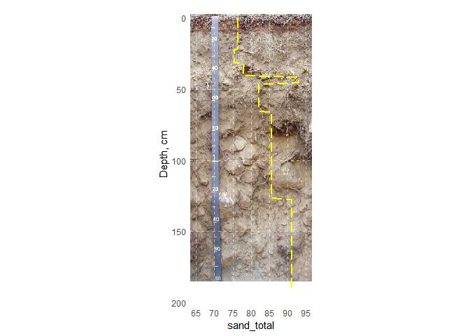
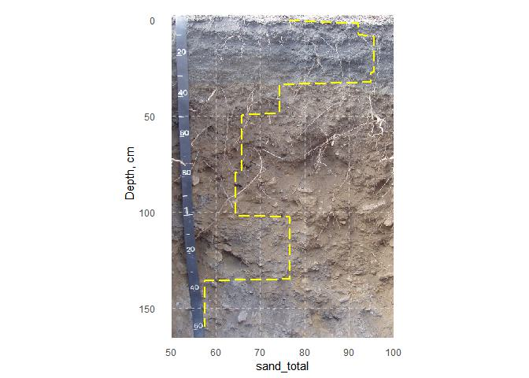

The goal of SoilProfileGraphs is to provide extensions for ‘aqp’ and ‘ggplot2’ for creation of soil profile-related graphics. The first focus is on ‘calibrated’ pit photographs with overplotting of soil property data.
Installation
You can install the development version of SoilProfileGraphs like so:
# install.packages("remotes")
remotes::install_github("brownag/SoilProfileGraphs")Example
This is a basic example which shows you how to solve a common problem:
library(SoilProfileGraphs)
library(soilDB)
spc <- readRDS(system.file("extdata", "aecpedons.rds",
package = "SoilProfileGraphs"))[4, ]
lab <- soilDB::fetchLDM(spc$pedlabsampnum)
#> single result set, returning a data.frame
#> converting profile IDs from integer to character
spg(
lab,
system.file("extdata", "sueredo.png",
package = "SoilProfileGraphs"),
prop = "sand_total",
depth_min = -3,
depth_max = 185,
no_data_value = 76.5,
prop_min = 65,
prop_max = 95
)
#> 2 depth range(s) with missing analytical data removed from 34504.
spc <- readRDS(system.file("extdata", "aecpedons.rds",
package = "SoilProfileGraphs"))[3, ]
lab <- soilDB::fetchLDM(spc$pedlabsampnum)
#> single result set, returning a data.frame
#> converting profile IDs from integer to character
spg(
lab,
system.file("extdata", "buttelake.png",
package = "SoilProfileGraphs"),
prop = "sand_total",
depth_min = -3,
depth_max = 165,
no_data_value = 76.5,
prop_min = 50,
prop_max = 100
)
#> 1 depth range(s) with missing analytical data removed from 34099.